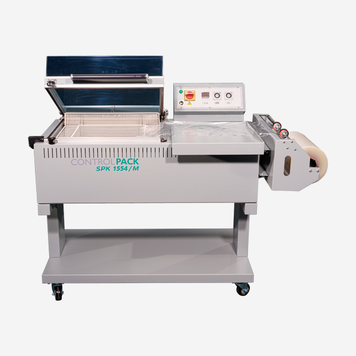
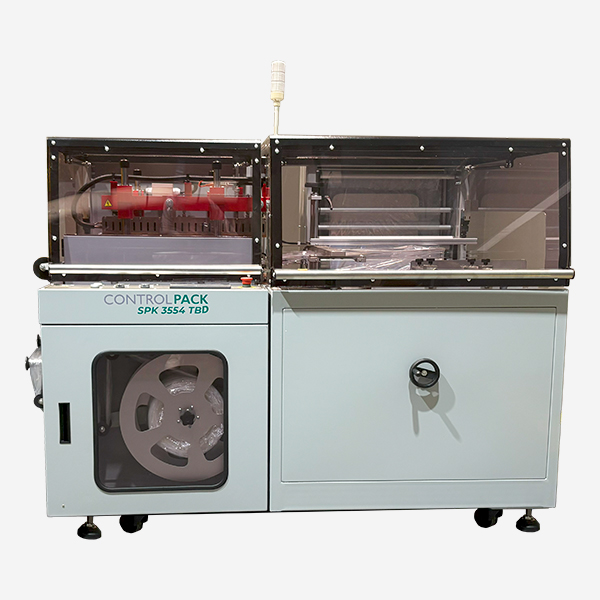
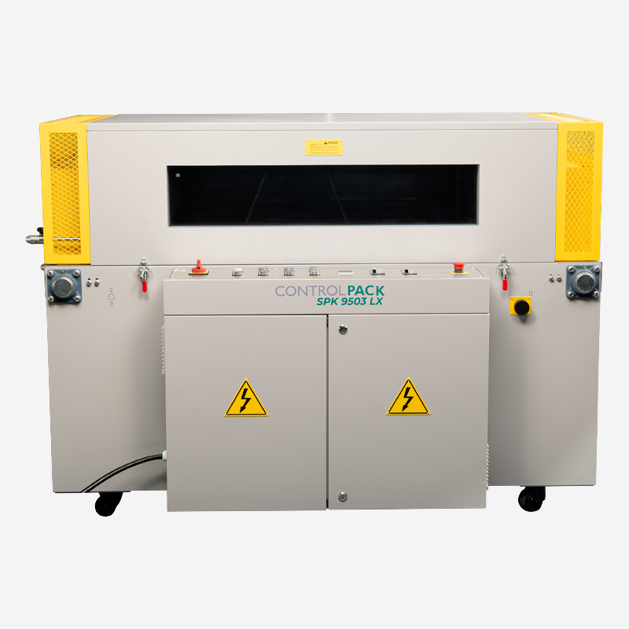
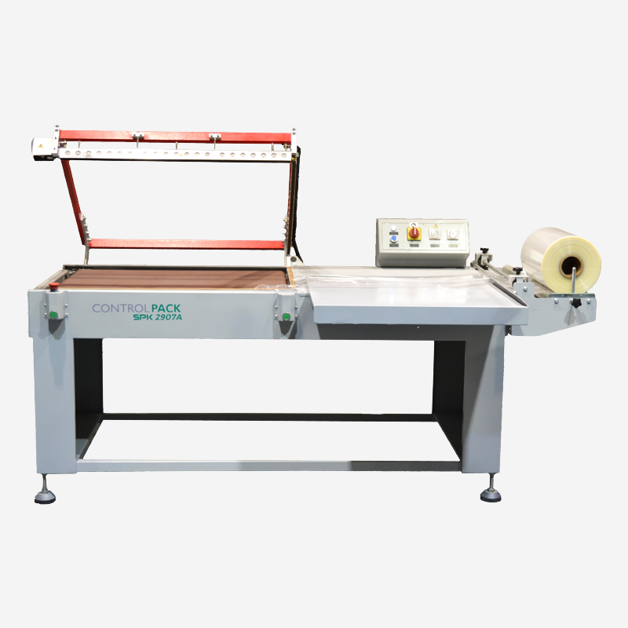
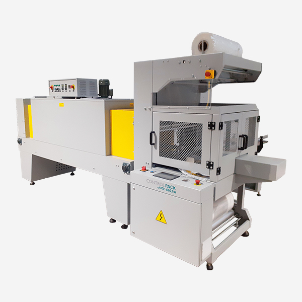

Gamme complète de thermofilmeuses SPK : L-bar, flowpack, automatiques et semi-automatiques.
La marque SPK propose une gamme exhaustive de thermofilmeuses adaptées à tous les secteurs et toutes les cadences. Du modèle de table compact aux lignes automatiques haute cadence.

Thermofilmeuse L-bar semi-automatique
Scelleuse L-bar + tunnel 600mm, film PE/POF/PVC jusqu'à 600mm largeur, 8-12 cycl...
Voir le produit
Thermofilmeuse L-bar professionnelle
Tunnel 800mm, 15 cycles/min, contrôle température digital, format jusqu'à 700mm ...
Voir le produit
Thermofilmeuse automatique
Automatique complète, 25 cycles/min, photocellule détection produit, IHM tactile...
Voir le produit
Thermofilmeuse flowpack horizontal
Flowpack horizontal pour produits alimentaires, 80 sachets/min, film PE multicou...
Voir le produit
Thermofilmeuse automatique haute cadence
45 cycles/min, tunnel 1000mm, multi-formats, changement de bobine rapide 3 min....
Voir le produitThermofilmeuse compacte de table
Table, format jusqu'à 350mm largeur, 6 cycles/min, idéale boutiques et PME....
Voir le produitThermofilmeuse I-bar manuelle
Scelleuse I-bar avec rétracteur incorporé, format libre, idéale pour petits volu...
Voir le produitTunnel de rétraction seul
Tunnel 1200mm de large à associer à votre scelleuse existante, température 0-300...
Voir le produitThermofilmeuse latérale automatique
Scellage latéral pour produits multi-packs, 30 produits/min, format réglable mot...
Voir le produitThermofilmeuse film coextrudé alimentaire
Certifiée contact alimentaire, film POF coextrudé, 20 cycles/min, nettoyage faci...
Voir le produit